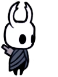

|
 O Cavaleiro |
 Um andarilho enigmático que desce a Hallownes carregando apenas um ferrão quebrado para se defender dos inimigos. 
|
A Sombra |
O Cavaleiro é um Receptáculo. Ele é filho do Rei Pálido e da Dama Branca,
- Wiki do Hollow Knight
nascido no Abismo com Vazio dentro de sua carapaça. Hornet é irmã do Cavaleiro por meio de seu pai comum.
Como o restante de seus irmãos Vasos, o Cavaleiro não tem gênero.
Vida e Alma
O Personagem possui dois tipos principais de vida: A vida normal, representada pelas Máscaras e a temporária, representada por Máscaras de Sangue Vital.
A Alma é representada por uma máscara circular e é utilizada para recuperar vida e usar magias. É obtida ao atacar inimigos.
O Ferrão
É a arma principal do Cavaleiro, capaz de atacar em qualquer direção e é uma ferramenta útil para se locomover pelo mapa. O Ferrão pode ser aprimorado e o jogador também pode liberar habilidades novas com ele.
Amuletos
Amuletos são itens equipáveis que auxiliam o jogador em diversas áreas, como aumentar a vida, auxiliar na localização ou aumentar a força.
Magias
Utilizando alma, causa grande quantidade de dano. Cada magia pode ser melhorada para uma versão mais forte dela.
Habilidades
As habilidades ou até mesmo ferramentas servem mais para melhorar a locomoção do jogador, como escalar paredes, esquivar e pular duas vezes.
A Sombra
Ao morrer, a sombra toma o lugar onde o cavaleiro estava por último e fica guardando o dinheiro e a alma dele, até o jogador voltar e matá-la. Enquanto a sombra estiver viva, o jogador pode usar apenas 66% da alma recebida.